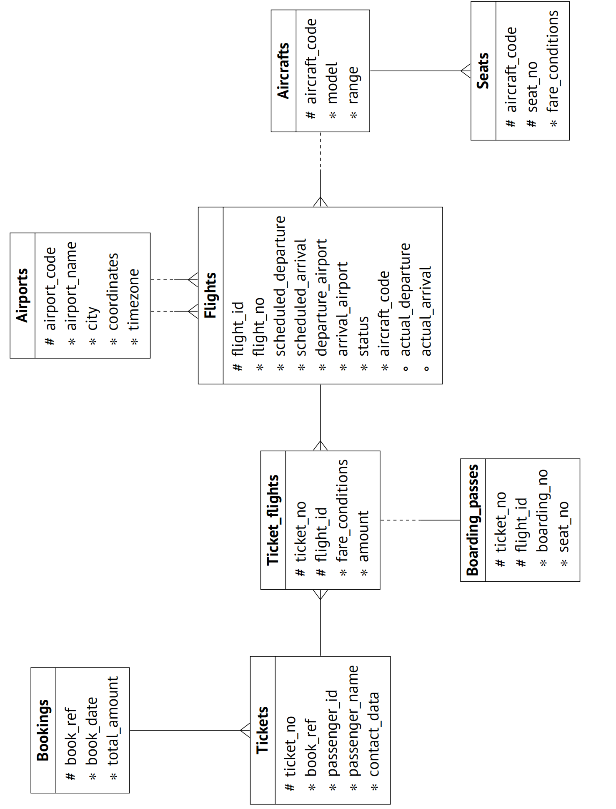
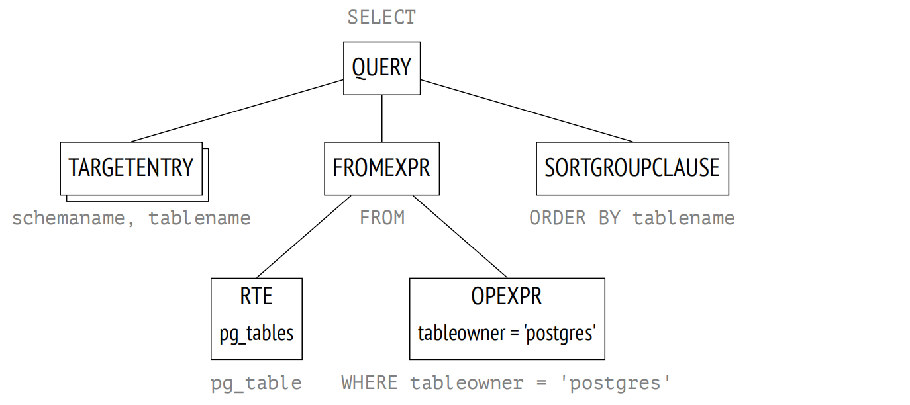
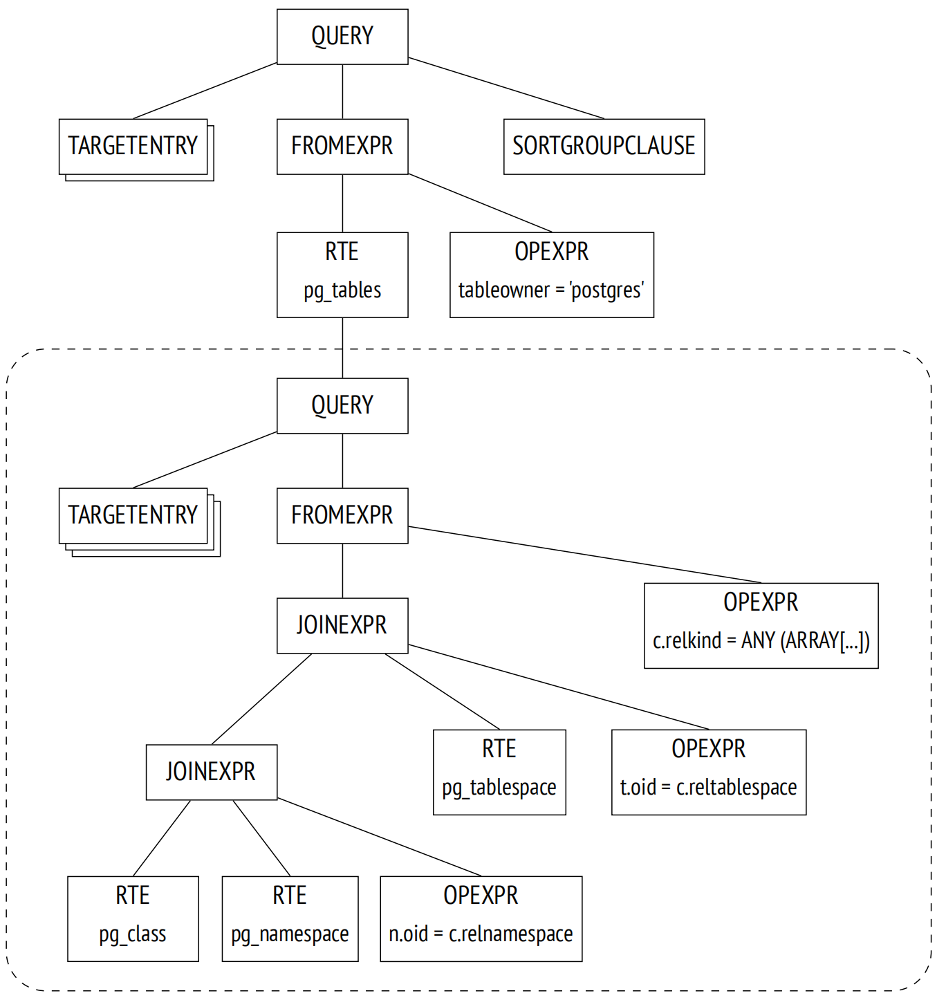
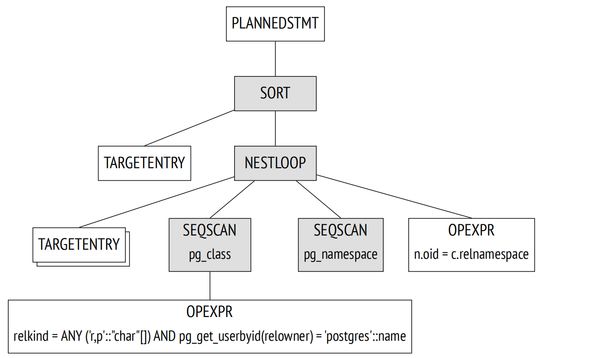
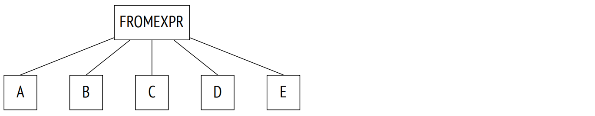
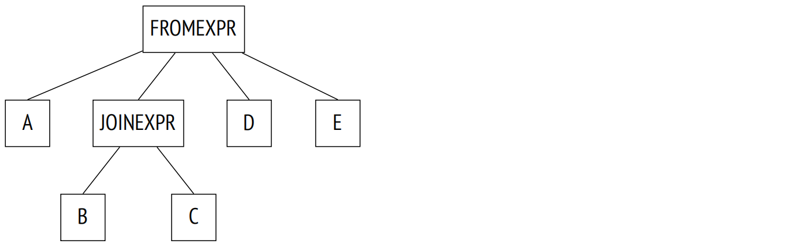
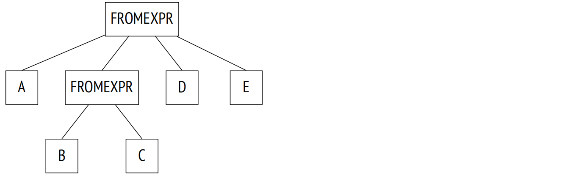
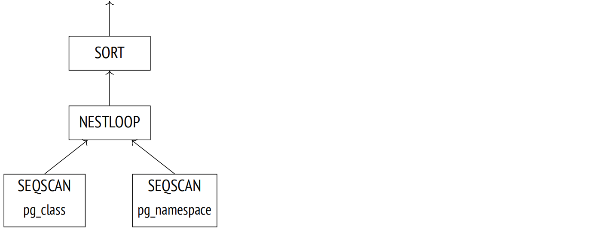

第 16 章：查询执行阶段
16.1 示例数据库
本书前面部分的示例都是基于仅有少量行的表。此章节及后续部分将讨论查询执行，这方面的要求会更高：我们需要行数更多的表。我没有为每个例子都创建一个新的数据集，而是使用了一个现有的示例数据库，其展示了俄罗斯的客运航空量 1。它有多个版本；我们将使用于 2017 年 8 月 15 日创建的数据量更大的版本。要安装此版本，你需要从归档中提取包含数据库副本的文件 2，并在 psql 中运行此文件。
在开发这个示例数据库时，我们尽量让其模式简单到无需额外解释即可理解；同时，我们希望它也足够复杂，能够编写有意义的查询语句。数据库中填充了贴近现实的数据，这使得示例更加全面，使用起来应该会很有趣。
此处我只会简要介绍主要的数据库对象；如果你想查看整个模式，可以查看脚注中引用的完整描述。
主要实体是预订 (映射到 bookings 表)。一次预订可以包含几个乘客，每个乘客都有一张单独的电子机票 (tickets)。乘客不构成单独的实体；为了我们的实验，我们将假设所有的乘客都是唯一的。
每张机票包括一个或多个航段 (映射到 ticket_fights 表)。在两种情况下，单张机票可以有多个航段：要么是往返机票，要么是为转机而签发的。尽管在模式中没有相应的约束，但假定一个预订中的所有机票都有相同的航段。
每个航班 (flights) 从一个机场 (airports) 飞往另一个机场。具有相同航班号的航班具有相同的出发点和目的地，但出发日期不同。
routes 视图基于 flights 表；它显示了与特定航班日期无关的航线信息。
在办理登机手续时，每位乘客都会被签发一张带有座位号的登机牌 (boarding_passes)。只有在机票中包含该航班时，乘客才能办理登机手续。航班与座位的组合必须是唯一的，因此不可能为同一个座位签发两张登机牌。
飞机上的座位 (seats) 数量及其在不同舱位之间的分布取决于执飞的特定飞机模型 (aircrafts)。假设每个飞机模型只能有一个座舱配置。
一些表有代理主键，而其他表使用原生主键 (其中一些是复合主键)。这仅仅是出于演示的目的，并不是一个可以效仿的例子。
示例数据库可以被视为真实系统的转储：它包含了过去某个特定时刻获取的数据快照。要显示此时间，你可以调用 bookings.now() 函数。在示例查询中使用此函数，需要在现实世界中使用 now() 函数。
机场名、城市名和飞机型号的名称存储在 airports_data 和 aircrafts_data 表中；它们有两种语言，英语和俄语。为了构造本章中的示例，我通常会查询实体关系图中显示的 airports 和 aircrafts 视图；这些视图基于 bookings.lang 参数的值选择输出语言。尽管如此，一些基表的名称仍可能出现在查询计划中。
16.2 简单查询协议
一个简单版本的 client-server 协议 3 支持执行 SQL 查询：它将查询文本发送至服务器，并获得完整的执行结果，无论其中包含多少行数据 4。发送到服务器的查询历经几个阶段：解析、转换、规划，然后执行。
16.2.1 解析
首先，PostgreSQL 需要解析 5 查询文本以了解需要执行什么。
词法和语法分析。词法分析器将查询文本分割为一组词素 6 (如关键字、字符串字面量和数值字面量)，而语法分析器根据 SQL 语言的语法 7 验证这组词素。PostgreSQL 依赖标准解析工具，即 Flex 和 Bison 工具。
解析后的查询在后端进程的内存中体现为一颗抽象语法树。
例如，让我们看一下以下查询：
SELECT schemaname, tablename
FROM pg_tables
WHERE tableowner = 'postgres'
ORDER BY tablename;词法分析器识别出五个关键字、五个标识符、一个字符串字面量和三个单字母词素 (逗号、等号和分号)。语法分析器使用这些词素来构建语法树，下图以非常简化的形式显示了语法树。树节点旁边的说明文字指定了查询的相应部分：
一个相当晦涩的 RTE 缩写代表 Range Table Entry。PostgreSQL 源代码中使用术语 range table 来表示表、子查询、关联结果，换句话说，指那些可以由 SQL 操作符处理的任何行集。8
语义分析。语义分析 9 的目的是确认数据库中是否包含查询根据名称引用的表或其他对象，以及用户是否具有访问这些对象的权限。所有语义分析需要的信息都存储在系统表中。
获得语法分析树后，语义分析器执行进一步的重构，包括添加对特定数据库对象、数据类型和其他信息的引用。
如果打开了 debug_print_parse 参数，你可以在服务器日志中看到完整的语法分析树，尽管这没有什么实际的意义。
16.2.2 转换
在下一阶段，查询会被转换(重写)。10
内核出于多种目的使用转换。其中之一是用视图的基本查询所对应的子树来替换语法树中的视图名称。
另一种使用转换的情况是行级安全的实现。11
递归查询的 SEARCH 和 CYCLE 子句也在此阶段进行转换。12
在上面的示例中，pg_tables 是一个视图；如果我们将其定义放在查询文本中，它将如下所示：
SELECT schemaname, tablename
FROM (
-- pg_tables
SELECT n.nspname AS schemaname,
c.relname AS tablename,
pg_get_userbyid(c.relowner) AS tableowner,
...
FROM pg_class c
LEFT JOIN pg_namespace n ON n.oid = c.relnamespace
LEFT JOIN pg_tablespace t ON t.oid = c.reltablespace
WHERE c.relkind = ANY (ARRAY['r'::char, 'p'::char])
)
WHERE tableowner = 'postgres'
ORDER BY tablename;然而，服务器并不处理查询的文本表示；所有操作都在语法树上执行。下图显示了转换后树的简化版本 (如果打开了 debug_print_rewrite 参数，你可以在服务器日志中看到其完整版本)。
语法树反映了查询的语法结构，但它并没有说明操作应该以何种顺序执行。
PostgreSQL 还支持用户通过重写规则系统实现的自定义转换。13
规则系统的支持被宣称为 Postgres 发展的主要目标之一；14 当规则首次实现时，它还是一个学术项目，但从那时起，规则已经被多次重新设计。规则系统是一个非常强大的机制，但理解和调试它相当困难。甚至有人提议完全从 PostgreSQL 中移除规则，但这个想法并没有获得一致支持。在大多数情况下，使用触发器而不是规则会更安全也更容易。
16.2.3 规划
SQL 是一种声明式语言：查询仅指定了要获取哪些数据，但没有指定如何去获取。
任何查询都有多条执行路径。语法树中显示的每个操作都可以通过多种方式完成：例如，可以通过读取整个表以获取结果 (并过滤掉冗余项) ，或者通过索引扫描找到所需的行。数据集总是成对连接的，因此有大量不同的选项，这些选项在连接的顺序上各不相同。除此之外，还有多种连接算法：例如，执行器可以扫描第一个数据集的行，并在另一个数据集中检索匹配的行，或者可以先对两个数据集进行排序，然后合并在一起。对于每种算法，我们都可以找到一个使用案例，其中它的表现优于其他算法。
最佳和非最佳的计划，其执行时间可能相差几个数量级，因此负责优化解析后的查询的规划器 15 是系统中最复杂的组件之一。
计划树。执行计划也以树的形式表示，但其节点涉及的是数据的物理操作，而非逻辑操作。
如果你想探索完整的计划树，可以通过打开 debug_print_plan 参数将它们转储到服务器日志中。但在实践中，通常查看 EXPLAIN 命令 16 显示的计划的文本表示就足够了。
下图着重显示了树的主要节点。这些节点正是 EXPLAIN 命令输出中显示的节点。
现在，让我们关注以下两点：
- 树仅包含三个查询表中的两个：规划器发现检索结果并不需要其中一个表，并将其从计划树中移除。
- 对于树中的每个节点，规划器提供了预估成本和预估要处理的行数。
=> EXPLAIN SELECT schemaname, tablename
FROM pg_tables
WHERE tableowner = 'postgres'
ORDER BY tablename;
QUERY PLAN
−−−−−−−−−−−−−−−−−−−−−−−−−−−−−−−−−−−−−−−−−−−−−−−−−−−−−−−−−−−−−−−−−−−−−
Sort (cost=21.03..21.04 rows=1 width=128)
Sort Key: c.relname
−> Nested Loop Left Join (cost=0.00..21.02 rows=1 width=128)
Join Filter: (n.oid = c.relnamespace)
−> Seq Scan on pg_class c (cost=0.00..19.93 rows=1 width=72)
Filter: ((relkind = ANY ('{r,p}'::"char"[])) AND (pg_g...
−> Seq Scan on pg_namespace n (cost=0.00..1.04 rows=4 wid...
(7 rows)查询计划中显示的 Seq Scan 节点对应读取表的操作，而 Nested Loop 节点代表连接操作。
计划搜索。PostgreSQL 使用基于成本的优化器；17 它会检查潜在的计划，并估算执行它们所需的资源 (比如 I/O 操作或 CPU 周期)。这种评估会具体细化成一个数字，称为计划的成本。在所有考虑的计划中，优化器会选择成本最低的计划。
但问题在于，随着连接表的数量增加，潜在可用计划的数量呈指数级增长，因此即使是相对简单的查询，也不可能将全部计划考虑在内。通常情况下，会使用动态规划算法，同时结合一些启发式算法来缩小搜索范围。这使得规划器能够在可接受的时间内为包含大量表的查询找到数学上精确的解决方案。
精确的解决方案并不能保证所选计划确实是最优的，因为规划器使用的是简化的数学模型，并且可能缺乏可靠的输入数据。
管理连接顺序。查询可以以某种方式构建，以在一定程度上限制搜索范围 (但有可能错过最优计划)。
- 通用表表达式 (CTE) 和主查询可以单独优化；为了保证这种行为，你可以指定 MATERIALIZED 子句。18
- 在非 SQL 函数中运行的子查询总是单独优化的。(SQL 函数有时可以内联到主查询中。19）
- 如果设置了 join_collapse_limit 参数并在查询中使用显式 join 子句，那么某些连接的顺序将由查询语法结构定义；from_cllapse_limit 参数对子查询有相同的影响。20
最后一点可能需要解释一下。让我们看一个查询，它没有为 FROM 子句中列出的表指定任何显式连接：
SELECT ...
FROM a, b, c, d, e
WHERE ...此处，规划期必须考虑所有可能的连接组合。查询由语法树的以下部分表示 (示意性地展示)：
在下一个示例中，连接有一个由 JOIN 子句定义的特定结构。
SELECT ...
FROM a, b JOIN c ON ..., d, e
WHERE ...语法分析树表明了这种结构：
规划器通常会展平连接树，使其看起来像第一个例子中的那样。规划器算法会遍历树，并用其元素的平面列表替换每个 JOINEXPR 节点。21
然而，只有当生成的平面列表中的元素不超过 join_collapse_limit 时，才会执行这种展平。在这个特定案例中，如果 join_collapse_limit 值小于 5，那么 JOINEXPR 节点将不会被展平。
对于规划器来说，它意味着：
- 表 B 必须与表 C 连接 (反之亦然，表 C 必须与表 B 连接；一对连接内的顺序不受限制)。
- 表 A、D、E 以及 B 与 C 的连接结果可以按任何顺序连接。
如果 join_collapse_limit 参数设置为 1，那么由显式 JOIN 子句定义的顺序会被保留。
对于 FULL OUTER JOIN 操作，无论 join_collapse_limit 参数的值如何，它们都不会被展平。
from_collapse_limit 参数以类似的方式控制子查询的展平。尽管子查询看起来不像 JOIN 子句，但在语法分析树级别，这种相似性便会变得很明显。
这里有一个示例查询：
SELECT ...
FROM a,
(
SELECT ... FROM b, c WHERE ...
) bc,
d, e
WHERE ...相应的连接树如下所示。这里唯一的区别是这颗树包含 FROMEXPR 节点，而不是 JOINEXPR (参数名称由此而来)。
遗传查询优化。一旦展平之后，树可能在同一层包含太多元素 — 无论是表还是必须单独优化的连接结果。规划时间会随着需要连接的数据集数量指数级增长，因此可能会超出所有合理的限制。
如果启用了 geqo 参数，且某一层的元素个数超过了 geqo_threshold 值，那么规划器将使用遗传算法来优化查询。22 这种算法比动态规划算法快得多，但不能保证找到的计划是最优的。因此，通常的做法是通过减少必须优化的元素数量来避免使用遗传算法。
遗传算法有多个可配置的参数，23 但我不打算在这里进行介绍。
选择最优计划。一个计划是否可以被认为是最优的，取决于特定客户端如何使用查询结果。如果客户端需要一次性获取完整结果 (例如，用于创建一份报告)，那么计划应优化对所有行的检索。但如果优先级是尽快返回第一行 (例如，用于屏幕显式)，最优计划可能完全不同。
为了做出选择，PostgreSQL 会计算成本的两个组成部分：
=> EXPLAIN
SELECT schemaname, tablename
FROM pg_tables
WHERE tableowner = 'postgres'
ORDER BY tablename;
QUERY PLAN
−−−−−−−−−−−−−−−−−−−−−−−−−−−−−−−−−−−−−−−−−−−−−−−−−−−−−−−−−−−−−−−−−−−−−
Sort (cost=21.03..21.04 rows=1 width=128)
Sort Key: c.relname
−> Nested Loop Left Join (cost=0.00..21.02 rows=1 width=128)
Join Filter: (n.oid = c.relnamespace)
−> Seq Scan on pg_class c (cost=0.00..19.93 rows=1 width=72)
Filter: ((relkind = ANY ('{r,p}'::"char"[])) AND (pg_g...
−> Seq Scan on pg_namespace n (cost=0.00..1.04 rows=4 wid...
(7 rows)第一个部分 (启动成本) 表示为节点执行做准备所付出的成本，而第二个部分 (总成本) 包括获取结果所产生的所有开销。
有时人们说启动成本是检索结果集第一行的成本，但这并不是太准确。
为了挑选出首选计划，优化器会检查查询是否使用了游标 (通过 SQL 中提供的 DECLARE 命令或在 PL/PGSQL 中显式声明)。24 如果没有，则假定客户端需要一次性获取整个结果，那么优化器会选择总成本最低的计划。
如果查询是通过游标执行的，所选计划必须优化仅检索占所有数据 cursor_tuple_fraction 比例的行。更准确地说，PostgreSQL 会选择以下表达式值最小的计划：25
startup cost + cursor_tuple_fraction (total cost − startup cost)
成本估算概要。为了估算计划的总成本，我们必须获取其所有节点的成本估算值。节点的成本取决于它的类型 (很明显，读取堆数据的成本与排序的成本不同) 和该节点处理的数据量 (更大的数据量通常会产生更高的成本) 。虽然节点类型已知，但数据量只能基于输入集的预估基数 (节点需要的行数作为输入) 和节点的选择率 (输出中剩余行的比例) 来估算。这些计算依赖于收集的统计信息，例如表的大小和表列中数据的分布情况。
因此，执行的优化取决于由 AUTOVACUUM 收集和更新的统计信息的准确性。
如果每个节点的基数估算都很准确，那么计算出的成本很可能充分反映出实际成本。主要的规划缺陷通常是由于对基数和选择率的估算不准确造成的，这可能是由于不准确或过时的统计信息、无法使用统计信息或者 — 在较小程度上，由于不完善的规划模型造成的。
基数估算。为了计算节点的基数，规划器必须递归完成以下步骤：
-
估算每个子节点的基数，并评估节点将从这些子节点接收到的输入行数。
-
估算节点的选择率，也就是将保留在输出中的行的比例。
节点的基数是这两个值的乘积。
选择率用从 0 到 1 的数字表示。数字越小，选择率越高，反之亦然，数字越接近 1，选择率越低。这似乎不合逻辑，但其想法是，高选择率的条件几乎会排除所有行，而仅排除少数行的条件则具有低选择率。
首先，规划器估算定义数据访问方法的叶节点的基数。这些计算依赖于收集的统计信息，例如表的总大小。
过滤条件的选择率取决于它们的类型。在最简单的情况下，可以假设它是一个常数值，尽管规划器试图使用所有可用的信息来细化评估。通常，了解如何估算简单的过滤条件就足够了；如果条件包含逻辑运算，那么选择率按以下公式计算：26 $$ sel_{x \text{ and } y} = sel_x sel_y \quad $$
$$ sel_{x \text{ or } y} = 1 - (1 - sel_x)(1 - sel_y) = sel_x + sel_y - sel_x sel_y $$
不幸的是，这些公式假设谓词 x 和 y 不相互依赖。对于相互依赖的谓词，这样的估算是不准确的。
为了估算连接的基数，规划器必须获得笛卡尔积的基数 (即两个数据集基数的乘积) 并估算连接条件的选择率，这同样取决于条件类型。
其他节点的基数 (例如排序或聚集) 估算以类似的方式进行。
需要注意的是，对于下层计划节点的基数若估算不准确会影响所有后续的计算，进而导致总成本估算不准确以及计划选择不佳。更糟糕的是，规划器没有关联结果的统计信息，只有表的统计信息。
成本估算。成本估算的过程也是递归的。要计算一棵子树的成本，需要计算并累加其所有子节点的成本，然后加上父节点本身的成本。
为了估算一个节点的成本，PostgreSQL 会将已经估算出的节点基数为输入，应用该节点所执行操作的数学模型。对于每个节点，都会计算启动成本和总成本。
有些操作没有前置条件，因此它们的执行会立即开始；这些节点的启动成本为零。
相反，其他操作需要等待一些准备动作完成。例如，排序节点通常需要等待其子节点所有的数据到位，才能继续执行自己的任务。此类节点的启动成本通常大于零：即使上层节点 (或客户端) 只需要全部输出中的一行数据，也必须付出此成本。
规划器执行的所有计算都只是估算，可能与实际执行时间无关。唯一目的是在相同条件下，对同一查询的不同计划进行比较。在其他情况下，比较查询 (尤其是不同的查询) 的成本是没有意义的。例如，由于过时的统计信息，成本可能被低估了；一旦刷新统计信息，计算出的数字可能会上升，随着估算越来越准确，规划器将选择一个更好的计划。
16.2.4 执行
查询优化期间创建的计划现在需要被执行。27
执行器在后端进程内存中打开一个 portal；28 它是一个保持当前正在执行的查询状态的对象。这个状态以一棵树的形式表示，展示了计划树的结构。
这棵树的节点就像一条流水线一样运行，相互请求以及发送数据。
查询执行从根开始。根节点 (在本例中代表 SORT 操作) 从它的子节点中拉取数据。接收到所有行之后，会对它们进行排序并传递给客户端。
一些节点 (如本例中所示的 NESTLOOP 节点) 从不同来源接收数据集并进行连接。这样的节点从两个子节点拉取数据，一旦接收到满足连接条件的一对行，就立即向上层传递结果 (不像排序，排序必须先获取所有行)。此时，节点的执行被中断，直到其父节点请求下一行。如果只需要部分结果 (例如，查询中有 LIMIT 子句)，那么操作将不会全部执行。
树的两个 SEQSCAN 叶节点负责表扫描。当父节点向这些节点请求数据时，它们从相应的表中获取后续的行。
然而一些节点不存储任何行，而是立即向上传递，但其他节点 (例如 SORT) 需要保留潜在的大量数据。为此，在后端进程内存中分配了一个 work_mem 内存块；如果此内存不够，剩余的数据会溢出到磁盘上的临时文件中。29
一个计划可能有多个需要存储数据的节点，因此 PostgreSQL 可能会分配多个内存块，每个内存块的大小为 work_mem。查询可使用的总 RAM 大小不受任何限制。
16.3 扩展查询协议
在使用简单查询协议时，每个命令 (即使是重复多次的命令) 都必须经过前面提及的所有阶段：
-
解析
-
转化
-
规划
-
执行
然而，多次解析同一个查询是没有意义的。重复解析仅常量不同的查询也没有多大意义 — 语法树的结构仍然是相同的。
简单查询协议的另一个缺点是，客户端一次性接收整个结果，无论可能包含多少行。
通常，你可以使用 SQL 命令克服这些限制。为了解决第一个问题，你可以在执行 EXECUTE 命令之前 PREPARE 查询；第二个问题可以通过使用 DECLARE 创建一个游标并通过 FETCH 返回行来解决。但在这种情况下，这些新创建对象的命名必须由客户端来处理，而服务端则需要额外的开销来解析额外的命令。
扩展 client-server 协议提供了另一种替代解决方案，使得可以在协议本身的命令级别上精确控制各个操作符的执行阶段。
16.3.1 预备
在预备阶段，查询像往常一样被解析和转换，但是生成的语法树会保留在后端进程的内存中。
PostgreSQL 没有用于查询的全局缓存。这种架构的缺点很明显：每个后端进程都必须解析所有传入的查询，即使同一个查询已经被另一个后端进程解析过，但也有一些好处。全局缓存很容易因为锁而成为瓶颈。客户端运行多个短小但不同的查询 (比如那些只有常量有所不同的查询) 会产生大量负载，并且会对整个实例的性能产生负面影响。在 PostgreSQL 中，查询是在本地解析的，因此不会对其他进程产生影响。
预备查询可以参数化。此处是一个使用 SQL 命令的简单示例 (尽管和协议级别的预备语句不同，但最终的效果是一致的)：
=> PREPARE plane(text) AS
SELECT * FROM aircrafts WHERE aircraft_code = $1;所有已命名的预备语句都会显示在 pg_prepared_statements 视图中：
=> SELECT name, statement, parameter_types
FROM pg_prepared_statements \gx
−[ RECORD 1 ]−−−+−−−−−−−−−−−−−−−−−−−−−−−−−−−−−−−−−−−−−−−−−−−−−−−−−−
name | plane
statement | PREPARE plane(text) AS +
| SELECT * FROM aircrafts WHERE aircraft_code = $1;
parameter_types | {text}你不会在此处找到任何未命名的语句 (使用扩展查询协议或 PL/pgSQL 的语句)。其他后端进程的预备语句也不会显示：无法访问其他会话的内存。
16.3.2 参数绑定
在执行预备语句之前，必须绑定实际参数值。
=> EXECUTE plane('733');
aircraft_code | model | range
−−−−−−−−−−−−−−−+−−−−−−−−−−−−−−−−+−−−−−−−
733 | Boeing 737−300 | 4200
(1 row)在预备语句中绑定参数相较于将字面量与查询字符串拼接起来的优势在于，它使得 SQL 注入变得绝无可能：绑定的参数值无法以任何方式修改已经创建的语法树。
要在没有预备语句的情况下达到相同的安全级别，你需要仔细转义来自不可信来源的每个值。
16.3.3 规划和执行
在执行预备语句时，查询规划是基于实际参数值进行的；然后将计划传递给执行器。
不同的参数值可能意味着不同的最优计划，因此考虑确切的值很重要。例如，在查找昂贵的预定时，规划器假设匹配的行数不会太多，并使用索引扫描：
=> CREATE INDEX ON bookings(total_amount);
=> EXPLAIN SELECT * FROM bookings
WHERE total_amount > 1000000;
QUERY PLAN
−−−−−−−−−−−−−−−−−−−−−−−−−−−−−−−−−−−−−−−−−−−−−−−−−−−−−−−−−−−−−−−−−−−−−
Bitmap Heap Scan on bookings (cost=86.49..9245.82 rows=4395 wid...
Recheck Cond: (total_amount > '1000000'::numeric)
−> Bitmap Index Scan on bookings_total_amount_idx (cost=0.00....
Index Cond: (total_amount > '1000000'::numeric)
(4 rows)但如果提供的条件适用于所有预订，那么使用索引就没有意义了，因为整个表都需要被扫描：
=> EXPLAIN SELECT * FROM bookings WHERE total_amount > 100;
QUERY PLAN
−−−−−−−−−−−−−−−−−−−−−−−−−−−−−−−−−−−−−−−−−−−−−−−−−−−−−−−−−−−−−−−−−−−
Seq Scan on bookings (cost=0.00..39835.88 rows=2111110 width=21)
Filter: (total_amount > '100'::numeric)
(2 rows)在某些情况下，规划器可能会同时保留语法树和查询计划以避免重复规划。这样的计划不考虑参数值，因此被称之为 generic plan (与基于实际值的 custom plan 相比)。30
当服务器在不影响性能的情况下可以使用 generic plan 的一个明显情况是查询中没有参数。
参数化预备语句的前五次优化始终依赖于实际参数值；规划器会基于这些值计算 custom plan 的平均成本。从第六次执行开始，如果 generic plan 平均比 custom plan 更有效 (考虑到 custom plan 每次都必须重新创建) 31，规划器便会保留 generic plan，并继续使用它，跳过优化阶段。
plane 预备语句已经执行过一次。在接下来的 3 次执行之后，服务器仍然使用 custom plan — 你可以通过查询计划中的参数值来判断：
=> EXECUTE plane('763');
=> EXECUTE plane('773');
=> EXPLAIN EXECUTE plane('319');
QUERY PLAN
−−−−−−−−−−−−−−−−−−−−−−−−−−−−−−−−−−−−−−−−−−−−−−−−−−−−−−−−−−−−−−−−−−
Seq Scan on aircrafts_data ml (cost=0.00..1.39 rows=1 width=52)
Filter: ((aircraft_code)::text = '319'::text)
(2 rows)在第 5 次执行之后，规划器切换到 generic plan：它与 custom plan 没有区别，成本是一致的，但是后端进程可以一次性创建并跳过优化阶段，从而减少规划开销。现在 EXPLAIN 命令显示参数是按位置引用的，而不是按值引用的：
=> EXECUTE plane('320');
=> EXPLAIN EXECUTE plane('321');
QUERY PLAN
−−−−−−−−−−−−−−−−−−−−−−−−−−−−−−−−−−−−−−−−−−−−−−−−−−−−−−−−−−−−−−−−−−
Seq Scan on aircrafts_data ml (cost=0.00..1.39 rows=1 width=52)
Filter: ((aircraft_code)::text = $1)
(2 rows)当之前的几个 custom plan 比 generic plan 更昂贵时，我们可以很容易想象出一些不愉快的事情；后续计划本来可以更有效，但规划器根本不会考虑。此外，它比较的是估算值而不是实际成本，这也可能导致计算错误。
然而，如果规划器做出了错误的选择，你可以通过相应地设置 plan_cache_mode 参数来覆盖自动决策，并选择是 generic plan 还是 custom plan：
=> SET plan_cache_mode = 'force_custom_plan';
=> EXPLAIN EXECUTE plane('CN1');
QUERY PLAN
−−−−−−−−−−−−−−−−−−−−−−−−−−−−−−−−−−−−−−−−−−−−−−−−−−−−−−−−−−−−−−−−−−
Seq Scan on aircrafts_data ml (cost=0.00..1.39 rows=1 width=52)
Filter: ((aircraft_code)::text = 'CN1'::text)
(2 rows)除了其他信息之外，pg_prepared_statements 视图还显示了所选计划的统计信息：
=> SELECT name, generic_plans, custom_plans
FROM pg_prepared_statements;
name | generic_plans | custom_plans
−−−−−−−+−−−−−−−−−−−−−−−+−−−−−−−−−−−−−−
plane | 1 | 6
(1 row)16.3.4 获取结果
扩展查询协议允许批次检索数据，而不是一次性全部检索。SQL 游标几乎具有相同的效果 (除了服务器有一些额外的工作，并且规划器进行了优化，仅获取前面 cursor_tuple_fraction 比例的行，而不是整个结果集)：
=> BEGIN;
=> DECLARE cur CURSOR FOR
SELECT *
FROM aircrafts
ORDER BY aircraft_code;
=> FETCH 3 FROM cur;
aircraft_code | model | range
−−−−−−−−−−−−−−−+−−−−−−−−−−−−−−−−−+−−−−−−−
319 | Airbus A319−100 | 6700
320 | Airbus A320−200 | 5700
321 | Airbus A321−200 | 5600
(3 rows)
=> FETCH 2 FROM cur;
aircraft_code | model | range
−−−−−−−−−−−−−−−+−−−−−−−−−−−−−−−−+−−−−−−−
733 | Boeing 737−300 | 4200
763 | Boeing 767−300 | 7900
(2 rows)
=> COMMIT;如果查询返回了多行，并且客户端需要所有数据，那么系统吞吐量高度依赖于批次的大小。单个批次中的行数越多，那么访问服务器以及获取响应所产生的通信开销就越少。但是随着批次大小的增加，这些好处变得不那么明显了：虽然一次一行与每批十行获取行的差异可能巨大，但如果比较每批 100 行和每批 1000 行，这种差异就不是那么明显了。
-
postgrespro.com/community/demodb ↩︎
-
edu.postgrespro.com/demo-big-en-20170815.zip ↩︎
-
postgresql.org/docs/14/protocol.html ↩︎
-
backend/tcop/postgres.c, exec_simple_query function ↩︎
-
postgresql.org/docs/14/parser-stage.html
backend/parser/README ↩︎ -
backend/parser/scan.l ↩︎
-
backend/parser/gram.y ↩︎
-
include/nodes/parsenodes.h ↩︎
-
backend/parser/analyze.c ↩︎
-
postgresql.org/docs/14/rule-system.html ↩︎
-
backend/rewrite/rowsecurity.c ↩︎
-
backend/rewrite/rewriteSearchCycle.c ↩︎
-
postgresql.org/docs/14/rules.html ↩︎
-
M. Stonebraker, L. A. Rowe. The Design of Postgres ↩︎
-
postgresql.org/docs/14/planner-optimizer.html ↩︎
-
postgresql.org/docs/14/using-explain.html ↩︎
-
backend/optimizer/README ↩︎
-
postgresql.org/docs/14/queries-with.html ↩︎
-
wiki.postgresql.org/wiki/Inlining_of_SQL_functions ↩︎
-
postgresql.org/docs/14/explicit-joins.html ↩︎
-
backend/optimizer/plan/initsplan.c, deconstruct_jointree function ↩︎
-
postgresql.org/docs/14/geqo.html
backend/optimizer/geqo/geqo_main.c ↩︎ -
postgresql.org/docs/14/runtime-config-query#RUNTIME-CONFIG-QUERY-GEQO.html ↩︎
-
backend/optimizer/plan/planner.c, standard_planner function ↩︎
-
backend/optimizer/util/pathnode.c, compare_fractional_path_costs function ↩︎
-
backend/optimizer/path/clausesel.c, clauselist_selectivity_ext & clauselist_selectivity_or functions ↩︎
-
postgresql.org/docs/14/executor.html
backend/executor/README ↩︎ -
backend/utils/mmgr/portalmem.c ↩︎
-
backend/utils/sort/tuplestore.c ↩︎
-
backend/utils/cache/plancache.c, choose_custom_plan function ↩︎
-
backend/utils/cache/plancache.c, cached_plan_cost function ↩︎